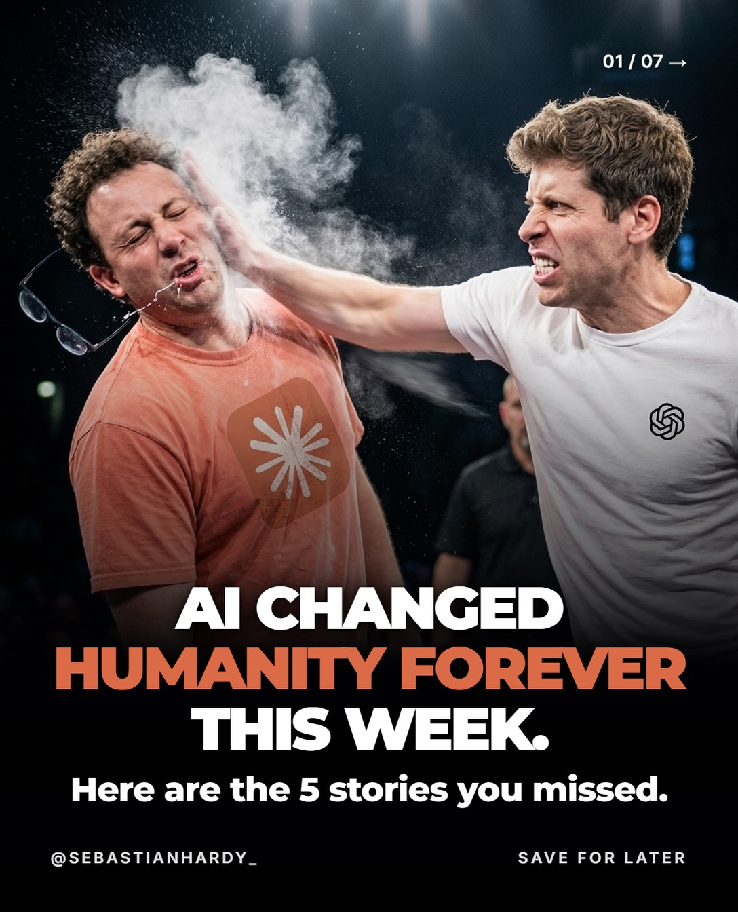
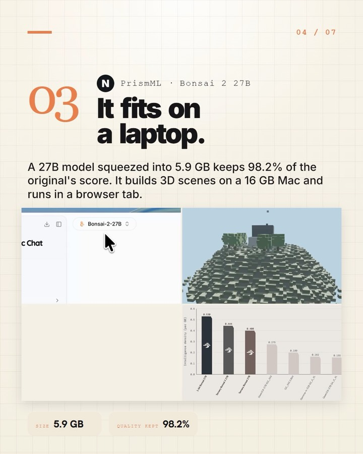
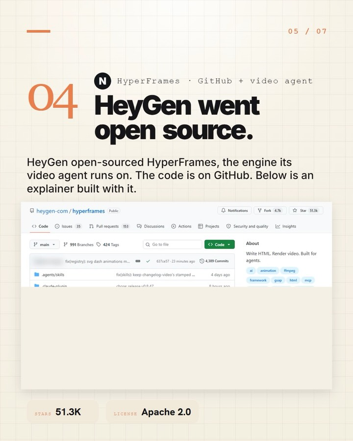
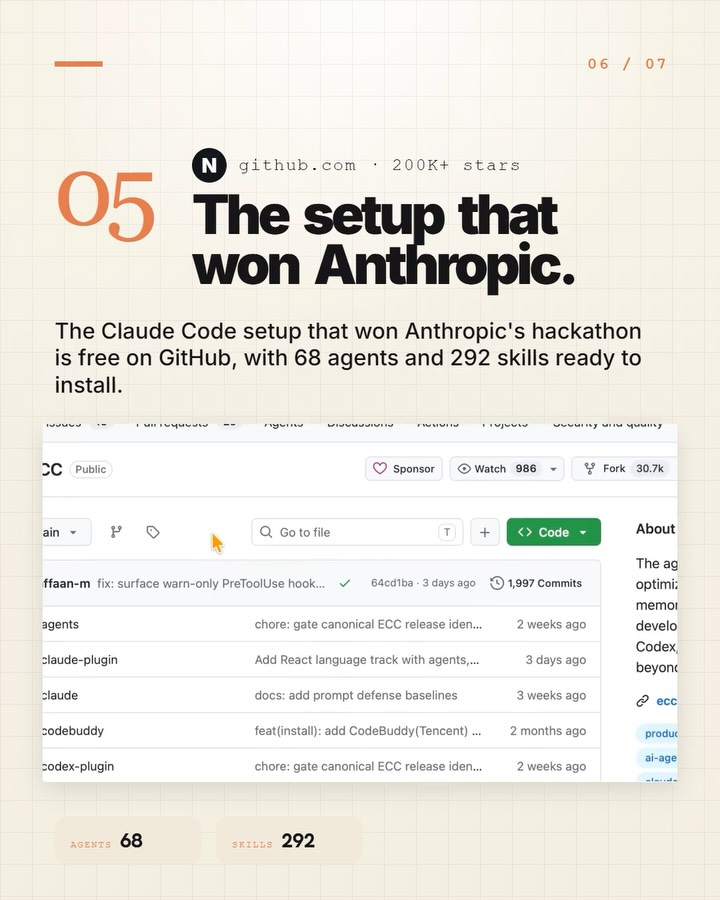

Instagram Post

AI changed humanity forever this week. Here are the 5 stories you missed.
carousel (7 slides) (enriched by ClaudeClaw)
Summary
01 / 07 → AI CHANGED HUMANITY FOREVER THIS WEEK | 02 / 07 01 N Bug bounty · Claude Opus 5 Claude broke into... | 03 / 07 02 N OpenRouter · weekly wallet share OpenAI just... | 04 / 07 03 N PrismML · Bonsai 2 27B It fits on a laptop | 05 / 07 04 N HyperFrames · GitHub + video agent HeyGen we... | 06 / 07 05 N github.com 200K+ stars The setup that won An... | 07 / 07 COMMENT "SLAP" FOR THE LINKS
Caption
AI changed humanity forever this week. Here are the 5 stories you missed.
Comment “SLAP” and I’ll send you every link from this week and how to put each one to work in a business.
Follow @sebastianhardy_ for the AI systems I use to run the business.
#ainews #claudeai #openai #aitools #artificialintelligence
1
01 / 07 → AI CHANGED HUMANITY FOREVER THIS WEEK. Here are the 5 stories you missed. @SEBASTIANHARDY_ SAVE FOR LATER
Two men are shown in a dramatic moment, with one man in a white shirt slapping another man in an orange shirt, causing a cloud of white powder or liquid to erupt from the impact on his face.
2
02 / 07 01 N Bug bounty · Claude Opus 5 Claude broke into OpenAI. Claude Opus 5 wrote a working exploit in hours after Opus 4.8 failed. It reached OpenAI's internal code for under $3,000 in tokens. BREAKING OVERNIGHT GMA CLAUDE USED TO HACK OPENAI GMA LAST SEASON NEWS AIRLINES SCALING BACK FLIGHT SCHEDULES DUE TO FUEL PRICES NEWS MODEL Opus 5 TIME Under 72 hours
The image displays a digital news article or presentation slide about Claude breaking into OpenAI, featuring a screenshot of a news broadcast with a man in glasses speaking and a news ticker at the bottom.
3
03 / 07 02 N OpenRouter · weekly wallet share OpenAI just passed Claude. OpenRouter users spent more on OpenAI than on Anthropic last week. The last time that happened was February 2024. Weekly wallet share on OpenRouter between Anthropic & OpenAI models in 2024 OpenAI vs Anthropic wallet share OpenRouter users spent more on OpenAI models than on Anthropic models last week, which had not happened since the week of Feb 26, 2024 100% 90% 80% 70% 60% 50% 40% 30% 20% 10% 0% Older models 50% Older models Fable 5.1 Fable 5 Opus S Sonnet S GPT 3.5 turbo GPT 3.5-16k GPT 3.5-061
4
04 / 07 03 N PrismML · Bonsai 2 27B It fits on a laptop. A 27B model squeezed into
5
05 / 07 04 N HyperFrames · GitHub + video agent HeyGen went open source. HeyGen open-sourced HyperFrames, the engine its video agent runs on. The code is on GitHub. Below is an explainer built with it. heygen-com / hyperframes Public Notifications Fork 4.7k Star 51.3k < Code Issues 35 Pull requests 153 Discussions Actions Projects Security and quality Insights > main 991 Branches 424 Tags Q Go to file Code About Write HTML. Render video. Built for agents. ai animation ffmpeg framework gsap html mcp fix(registry): mig dash animations n... 637ce57 - 22 minutes ago 4,189 Commits
6
06 / 07 05 N github.com 200K+ stars The setup that won Anthropic. The Claude Code setup that won Anthropic's hackathon is free on GitHub, with 68 agents and 292 skills ready to install. zed feat: add zed install target 2 weeks ago agents Add React language track with agents,... 3 days ago assets docs: fix bottom overflow in hero PNG,... last
7
07 / 07 COMMENT "SLAP" FOR THE LINKS. I'll send you every link from this week and how to put each one to work in a business. @SEBASTIANHARDY_ SAVE THIS ->
A social media post displays text on a light beige background with a subtle grid pattern, featuring a call to action to comment "SLAP" for links.
All slides


